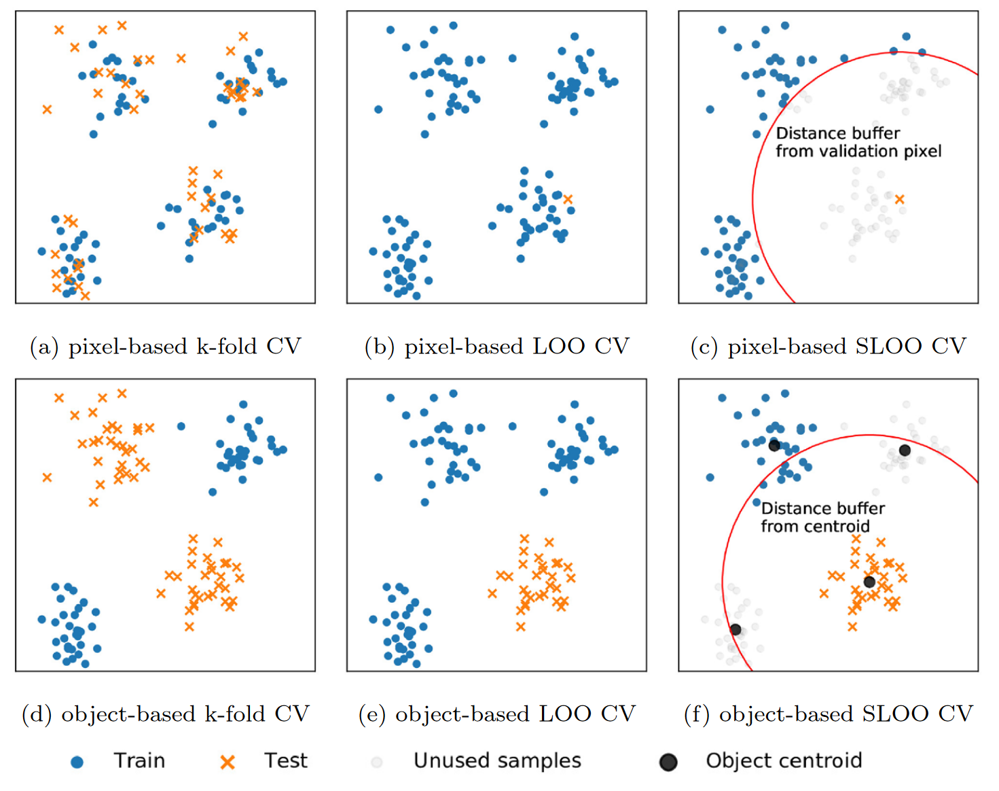
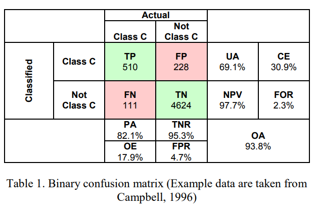
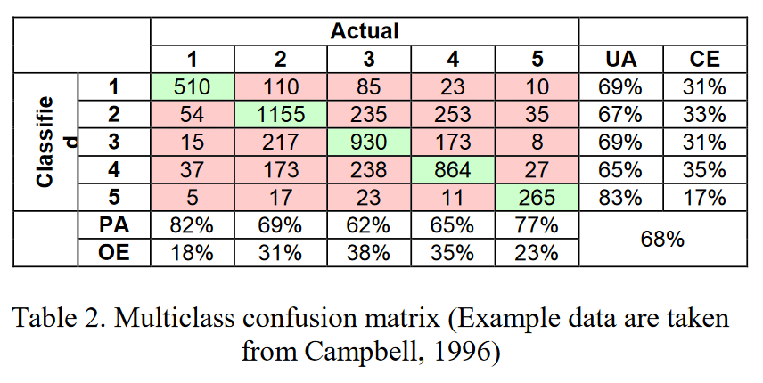
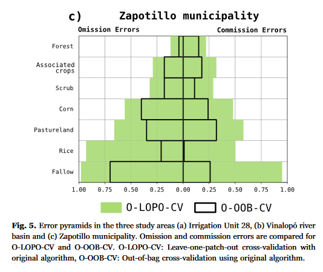

7 Classification II
7.1 Summary
Recap: what was covered in Classification I (Week 6)?
Week 6 covers the basics of classification techniques in remote sensing, including distinguishing between supervised and unsupervised methods, and an example of different methods (ISODATA, SVM) and their application.
What is covered in Classification II?
This diary entry covers object based analysis and sub-pixel analysis, spatial cross-validation, and measures of accuracy for classification models.
Trains a model to classify images based on ‘objects’ - segments of pixels that have been grouped together as single entity. This compares with pixel-based analysis where each pixel is classified in isolation. There are two steps to OBIA:
Segmentation: grouping the pixels together into discrete objects which should be defined by similar shape and spectral characteristics. Benz, Baatz and Schreier (2001) developed an early approach to segmentation specifically for remote sensing data, which aggregates similar pixels into segments while keeping the measured heterogeneity below a specified threshold. Heterogeneity is measured as a combination of both spectral and spatial characteristics - where spatial is further broken down into measures of smoothness and compactness.
Classification: classify the segmented objects, using the same methods as would be used in a pixel-based analysis.
OBIA has advantages over pixel-based analysis in that the model is not restricted to spectral information; rather, the model also takes the pixel’s context into account (i.e. through measures of shape).
Also known as Spectral Mixture Analysis (SMA) or Linear spectral unmixing.
Estimates the fractions of certain land cover classes that make up a single pixel. Attempts to account for the fact that land cover (in reality) does not have discrete boundaries. Calculating sub-pixel values utilises spectrally pure endmembers. These are the spectral characteristics of land cover known to be ‘pure’, or a single class - by contrast, most of the spectral reflectance observed by a sensor will be a function of the radiation/reflectance from a variety of endmember materials within the ground sampling distance (Jensen 2015).
The figure below illustrates how land cover classes may form fractions of a single pixel, and the conceptual basis behind sub-pixel analysis (Machado and Small 2013).

Useful toolkit: MESMA from the R library RStoolbox
Spatial cross-validation (CV) is designed to account for the effects of spatial autocorrelation in classification models. It is an extension of traditional (non-spatial) CV models, but instead of randomly sampling the split between test/train data, the data is split spatially in clusters (to minimise the effects of testing points being adjacent to training points, and thus invalidating the assumption of independence).
An additional alternative is to use a distance buffer around testing points, to prevent any nearby points being included in the training set. This distance can be fixed arbitrarily, or through using Moran’s I to calculate distance at which spatial autocorrelation effects become insignificant (Karasiak et al. 2022).

Like in any machine learning model, the performance of a remote sensing classification needs to be assessed to understand effectiveness and comparability to other models. In remote sensing there are a number of performance metrics, which can be represented in a confusion matrix.

The acronyms in the matrix above are as follows (Barsi et al. 2018):
| Acronym | Definition |
|---|---|
| TP | True Positive |
| FP | False Positive (alt: type I error) |
| TN | True Negative |
| FN | False Negative (alt: type II error) |
| UA | User’s Accuracy (alt: Precision, Positive Predictive Value) |
| CE | Comission Error (alt: false discovery rate) |
| NPV | Negative Prediction Value |
| FOR | False Omission Rate |
| PA | Producer’s Accuracy (alt: recall, true positive rate, sensitivity) |
| TNR | True Negative Rate |
| OE | Omission Error (alt: false negative rate) |
| FPR | False Positive Rate |
| OA | Overall Accuracy |
Of the measures above, the User’s Accuracy, Producer’s Accuracy and Overall Accuracy are the most common reported performance metrics.
A multi-class confusion matrix can also be represented:

7.2 Application
The development of classification models in remote sensing is very much an evolving process, as new methods are developed to optimise predictive capability whilst accounting for spatial dependency (autocorrelation). A (conceptually) simple model that accounts for spatial dependence is leave one out cross validation (LOO-CV), developed by Canovas-Garcia et al. (2017). The authors also developed an R package, SDRF, to work alongside the randomForest package and explicitly incorporate spatial splitting.
As part of this study, the authors assessed the performance results of random forest models accounting for spatial dependence compared with non-spatial counterparts. In this case, a confusion matrix comparing multiple models would become cumbersome, and the authors instead innovatively represented two common metrics, omission error and commission error, using a sequence of pyramid graphs, which provides a quick way to compare results across models and case study areas.

7.3 Reflection
This week, I was interested in a case study presented by Karasiak et al. (Karasiak et al. 2022), and as reported by Inglada (Inglada 2018), that highlights the importance of context and domain knowledge when evaluating classification models, outside of purely using performance metrics. In the TiSeLaC (Time Series Land Cover Classification Challenge) machine learning challenge, participants were tasked with the goal of producing a classification model with performance evaluated using F-scores (a machine learning metric that combines precision/UA and recall/PA scores of a model). One of the winning entrants scored an exceptionally high F-score of between 90 - 98%. Upon further investigation, Inglada found that the model was built using spatial nearest-neighbour classification, with the feature input being the pixel coordinates - i.e., no spectral data was used in the prediction.
These results confirm that (1) spatial autocorrelation was evident in the input data, as would be expected for remote sensing imagery, and (2) neighbouring pixels were present in the training and test sets, meaning that the test set was not independent from the training data (Inglada 2018). The takeaway from this is that focusing purely on metric optimisation, without considering the process or conceptual underpinning of the model, can easily lead to misleading results. I find that this lesson is a useful reminder of the importance of a multidisciplinary understanding, and that a machine learning specialist (even if they have a much deeper understanding of machine learning processes) may not be better suited to an applied geospatial task.